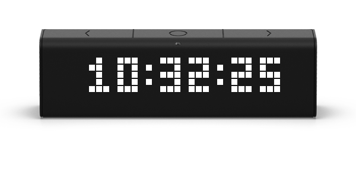

Type de produit
Appareil pour la réception, la transmission et la régénération de données, depuis/vers un appareil de la maison intelligente, un téléphone mobile ou internet
Modèle
LM 37X8
Utilisation
En intérieur uniquement
Taille & Poids
Dimensions: 20.1 x 6.1 x 3.6 cm / 7.9 x 2.4 x 1.4 in Poids: 0.223 kg / 0.49 lbs
Compatibilité langues
- Latin
- Cyrilique
- Japonais
Adaptation
- Anglais
- Français
- Russe
- Allemand
- Japonais
- Ukrainien
Connectivité
LaMetric prend en charge 802. 11 réseaux WiFi b / g / n 2,4 GHz et protocoles WEP / WPA / WPA2-Personal, WPA / WPA2-Enterprise (EAP-PWD uniquement) Bluetooth 4.0 (pour la diffusion de musique et les notifications sur smartphone)
Configuration
iPhone (iOS 10.0 ou plus) / smartphones Android (Android 5.0 ou plus)
Type d'écran
LED
Résolution d'écran
Écran blanc 37 x 8 avec section couleur 8 x 8 sur la gauche
Audio
Enceintes stéréo intégrées 2 x 2W Sortie audio stéréo 3,5mm pour enceintes externes (câble audio non fourni)
Applications intégrées
Horloge, météo, radio, minuterie, chronomètre
Alimentation
5V, 2A
Garantie
Garantie limitée d'1 an à partir de la date d'achat. Conditions générales s'appliquent
Origine
Conçu en Ukraine, Fabriqué en Chine
- Paiment 100% sécurisé
- Livraison dans plus de 70 pays
- Assistance